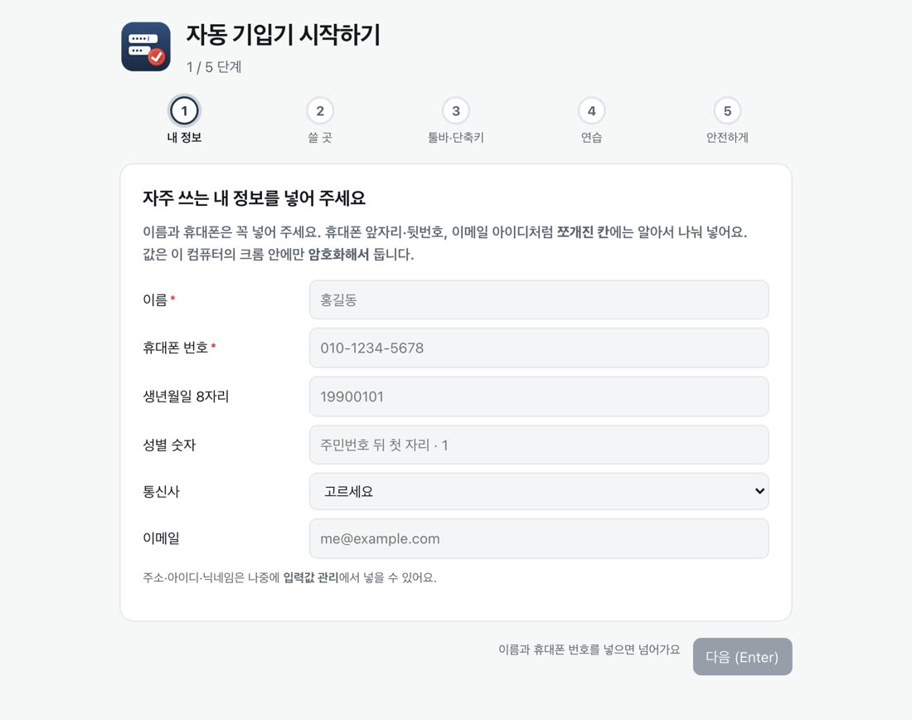
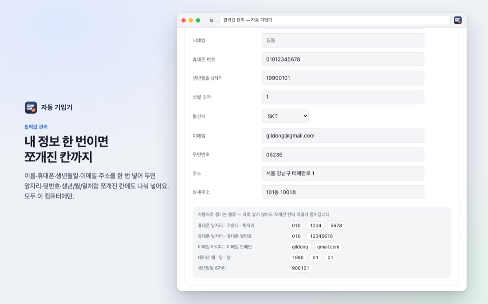
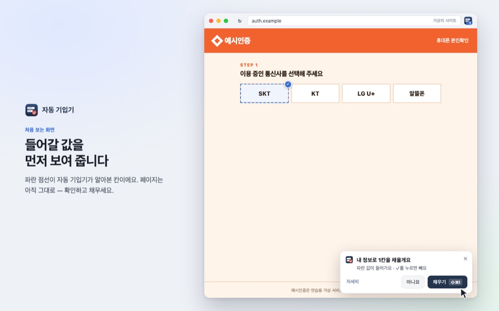
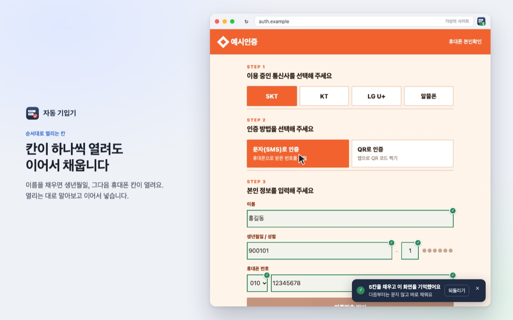
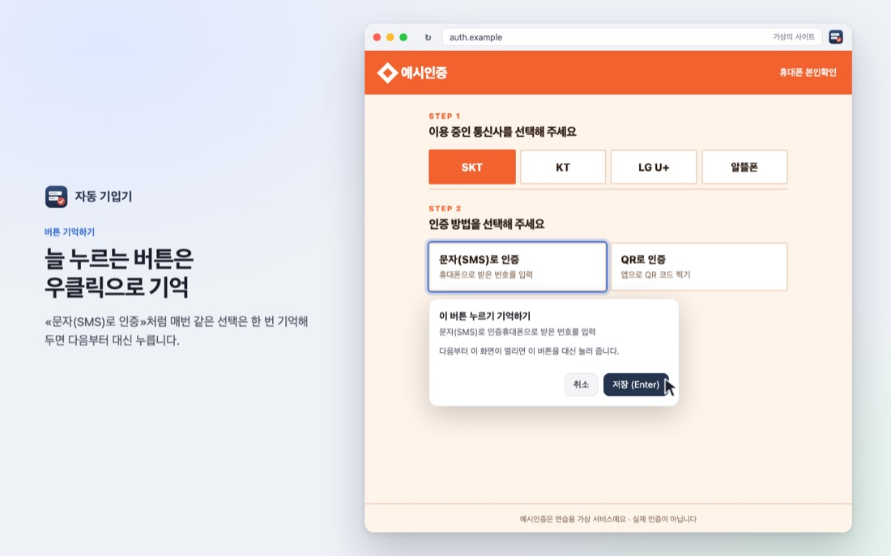
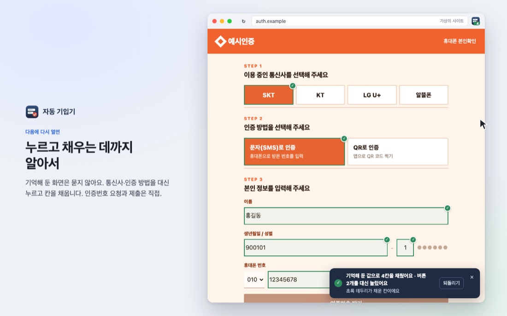
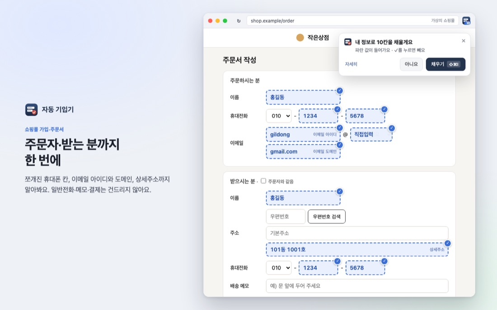
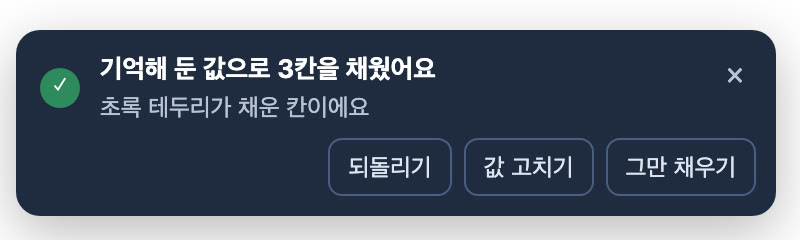
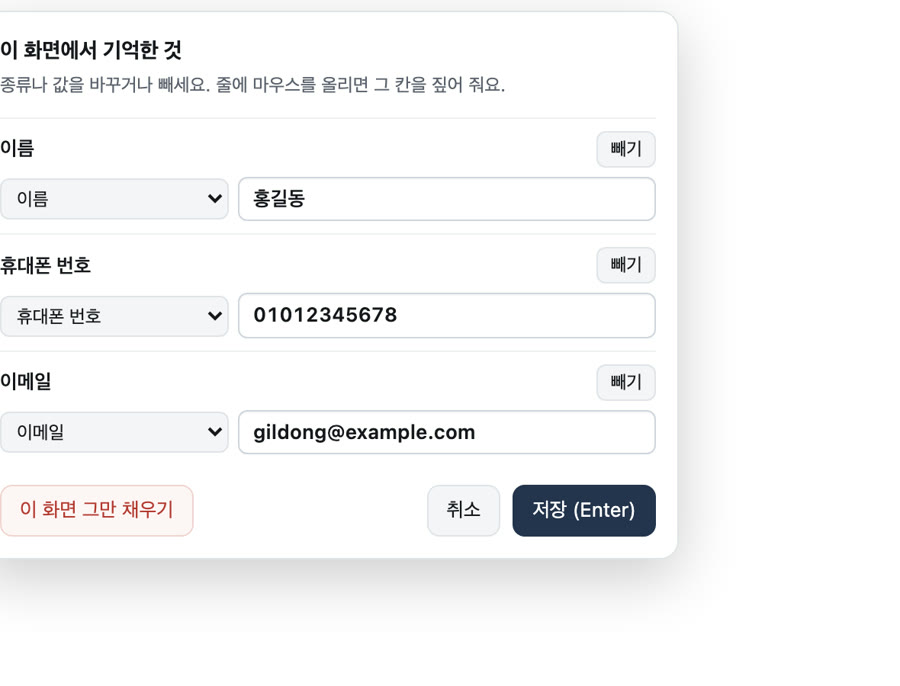
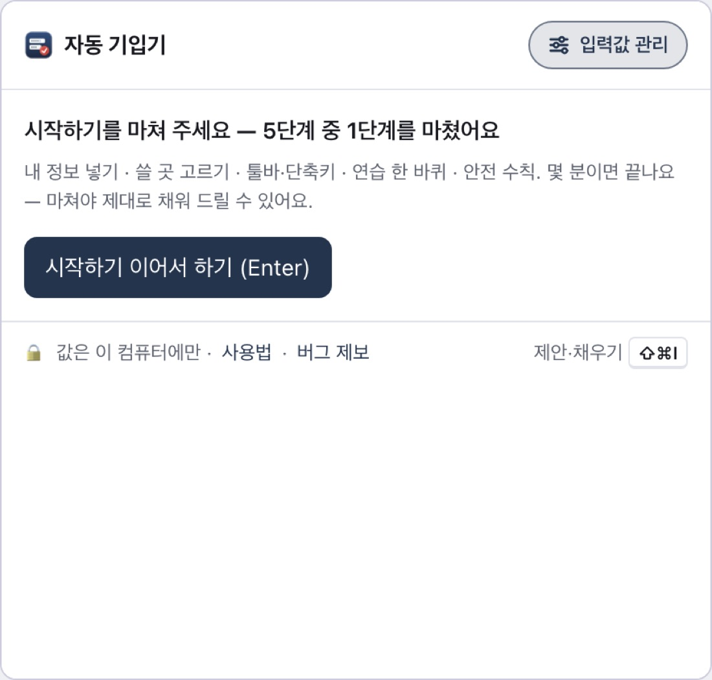

본인인증·회원가입·주문서에서 늘 치는 이름·생년월일·휴대폰·이메일·주소. 자동 기입기는 칸을 알아보고, 들어갈 값을 먼저 보여 준 뒤 채웁니다.
값은 이 컴퓨터에만 있고 어디로도 보내지 않습니다.
남색 막대 · 파란 점선 · 초록 ✓가 자동 기입기예요.
그림 속 주황색 «예시인증»은 설명을 위한 가상의 사이트입니다.
1시작하기 — 내 정보를 한 번 넣어 두세요
설치하면 시작하기가 열려요. 다섯 단계(내 정보 · 쓸 곳 · 툴바·단축키 · 연습 · 안전)를 마쳐야 제대로 채워 드릴 수 있어요.
이름·휴대폰은 꼭 넣고, 휴대폰 앞자리·뒷번호, 이메일 아이디·도메인, 태어난 해·달·날처럼 쪼개진 칸에는 알아서 나눠 넣어요.

나중에 고치거나 주소·아이디를 더 넣을 때는 툴바 아이콘 → 입력값 관리.

처음 보는 사이트에서도 제안을 받으려면 같은 화면의 모든 사이트에서 제안 받기를 켜세요. 끄면 값을 기억한 사이트에서만 움직입니다.
2처음 보는 폼 — 들어갈 값을 먼저 보여 줍니다
알아본 칸 위에 파란 점선으로 들어갈 값이 겹쳐 보입니다. 페이지는 아직 그대로예요(칸에 값이 들어간 게 아니라 그림만 얹은 것).
- 넣기 싫은 칸은 모서리의 ✓를 눌러 뺍니다.
- 오른쪽 아래 막대의 채우기를 누르거나 단축키 ⇧⌘I(윈도우 Ctrl+Shift+K)를 누르면 사람처럼 한 글자씩 들어갑니다.
- 종류가 틀렸으면 막대의 자세히에서 바꿉니다. 이 화면에서 다시 묻지 않게 할 수도 있어요.

3칸이 하나씩 열려도 이어서 채웁니다
본인확인 창은 이름을 넣으면 생년월일, 그다음 휴대폰 칸이 열리곤 해요. 열리는 대로 알아보고 이어서 넣습니다. 채운 칸은 초록 테두리로 잠깐 짚어 줘요.

4늘 누르는 버튼은 우클릭으로 기억
«문자(SMS)로 인증»·«간편인증»처럼 매번 같은 선택은 그 버튼에서 우클릭 → 자동 기입기 → 이 버튼 누르기 기억하기. 다음부터 대신 눌러 줍니다.

칸 하나만 기억하고 싶을 때는 칸에서 우클릭 → 이 칸 값 기억하기(단축키 ⇧⌘F). 칸이 하나씩 나타나는 화면에서 편해요.
5다음에 다시 열면 — 알아서 누르고 채웁니다
한 번 채운 화면은 기억해 둡니다. 다음에 열면 묻지 않고 기억한 버튼을 누르고 칸을 채워요. 툴바 아이콘의 초록 숫자가 채운 칸 수입니다.

6쇼핑몰 가입·주문서도
주문하시는 분·받으시는 분, 쪼개진 휴대폰 칸, 이메일 아이디와 도메인 목록, 상세주소까지 알아봅니다. 일반전화·배송 메모·결제는 건드리지 않아요.

우편번호 검색 창이 뜨면 저장해 둔 주소를 검색어로 미리 넣어 둡니다. 검색을 누르고 목록에서 고르는 것은 직접 하세요.
7되돌리기 · 지금 상황 보기 · 관리
- 채운 뒤 뜨는 알림의 되돌리기로 원래대로 돌립니다. 방금 기억한 것도 함께 지워요.
- 툴바 아이콘 숫자 — 파랑은 제안을 띄운 칸 수, 초록은 채운 칸 수.
- 기억한 값으로 알아서 채운 뒤 알림의 값 고치기로 칸마다 종류·값을 바꾸거나 뺍니다. 그만 채우기를 누르면 그 화면은 더 채우지도 묻지도 않아요(기억은 남고, 다시 켤 수 있어요).
알림을 놓쳤으면 페이지에서 우클릭 → 자동 기입기 → 이 화면에서 기억한 것 고치기.
- 아이콘을 누르면 이 사이트에 기억해 둔 값(칸 · 종류 · 값)이 보입니다. 입력값 관리에서 사이트별로 고치거나 지웁니다.



8안전하게
값은 이 컴퓨터의 크롬 안에만, 암호화해서(AES-256) 둡니다. 서버가 없고, 아무 데도 보내지 않으며, 구글 계정으로 동기화하지도 않아요.
채우기 전에는 사이트가 값을 못 봐요 — 미리보기는 사이트가 열 수 없는 층에 그리고, 사이트가 가짜 키로 채우게 할 수도 없어요. 화면 밖·투명한 상자에 숨긴 칸은 채우지 않습니다.
제출·동의·인증번호 요청은 언제나 직접 누릅니다. 엔터 키도 보내지 않아요. 비밀번호·인증번호·보안문자·주민번호 뒷자리 칸은 채우지 않습니다.
못 막는 것도 있어요 — 암호를 푸는 열쇠도 같은 크롬 안에 있어서, 이 컴퓨터 계정에 들어온 사람이나 악성 프로그램까지는 막지 못해요.
칸에 들어간 값은 그 사이트가 받습니다. 공용 컴퓨터에서는 쓰지 말고, 믿는 사이트에서만 «기억»하세요. 자세한 내용은 입력값 관리 → 보안·개인정보.
9단축키
| ⇧⌘I · Ctrl+Shift+K | 이 화면 채우기 제안 보기 → 한 번 더 누르면 채우기 |
| ⇧⌘Y · Ctrl+Shift+Y | 팝업 열기(엔터로 저장·채우기) |
| ⇧⌘F · Ctrl+Shift+F | 커서가 있는 칸 값 기억하기 |
다른 단축키와 겹쳐 비어 있으면 chrome://extensions/shortcuts에서 정할 수 있어요(입력값 관리 → 사용법 → 단축키 바꾸기).
설치하면 시작하기에서 연습 화면을 한 바퀴 돌아볼 수 있어요. 나중에는 입력값 관리 → 시작하기·연습 화면.
← 자동 기입기 지원 · 개인정보 처리방침